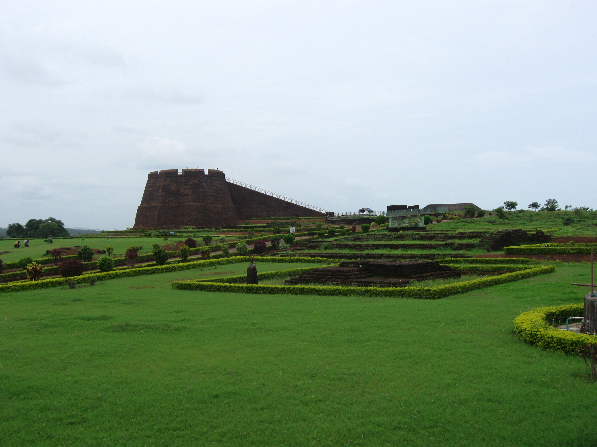
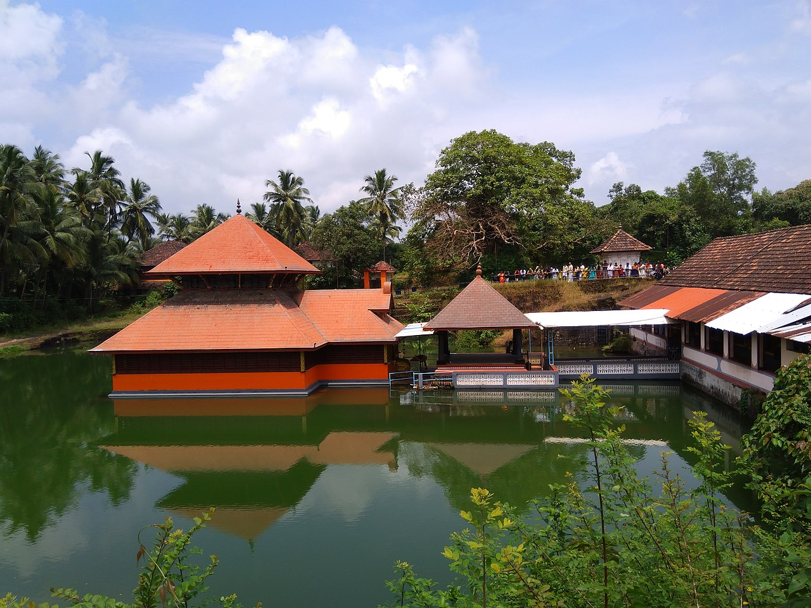
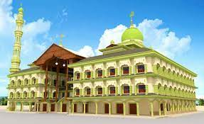

Bekal Fort
Bekal Fort was built by Shivappa Nayaka of Keladi in 1650 AD, at Bekal. It is the largest fort in Kerala, spreading over 40 acres (160,000 m2).The fort appears to emerge from the sea. Almost three-quarters of its exterior is in contact with water. Bekal fort was not an administrative centre and does not include any palaces or mansions.
An important feature is the water-tank, magazine and the flight of steps leading to an observation tower built by Tipu Sultan. Standing at the centre of the fort, this offers views of the coastline and the towns of Kanhangad, Pallikkara, Bekal, Mavval, Kottikkulam, and Uduma.
India declared Bekal Fort a special tourism area in 1992 and formed Bekal Tourism Development Corporation three years later to promote it.
How to Get Here
Local roads connect to Mangalore in the north and Calicut in the south. The nearest railway station is Bekal Fort Railway Station, Kanhangad Railway Station and Kotikulam Railway Station on Mangalore-Palakkad line. There are airports at Mangalore, Kannur and Calicut.
Ananthapura Lake Temple

Ananthapadmanabhaswamy Temple or Anantha Lake Temple is a Hindu temple built in the middle of a lake in the little village of Ananthapura, around 6 km from the town of Kumbla in Manjeshwaram Taluk of Kasaragod District of Kerala, South India. This is the only lake temple in Kerala and is believed to be the original seat (Moolasthanam) of Ananthapadmanabha Swami (Padmanabhaswamy temple) Thiruvananthapuram.
The lake in which the Sanctum Sanctorum is built measures about 2 acres (302 feet square). An interesting spot to keep in mind while visiting the temple is a cave to the right corner of the lake. According to the local legend, the deity Anantha Padmanabha chose to go all the way to Thiruvananthapuram through that cave
How to Get Here
The temple is open to all regardless of religion or caste. The nearest major railway station to Ananthapura Lake Temple is Kumbla railway station which is about 5 km from here. There is also a railway station at Kumbla. Mangalore Airport is the nearest airport which is about 60 km from here. Karipur International Airport, Kozhikode is about 200 km. To reach there by road one has to take a deviation from Naikap (4 km from Kumbla) on the Kumbala-Badiyadka road.
Ranipuram Hills

Ranipuram is a renowned tourist destination in the northern tip of Kerala. Located in Kasaragod, it is situated 750 m above sea level. It makes for a perfect picnic spot where one can even come across the occasional herd of elephants. Once known as Madathumala, it borders Karnataka and boasts of some of the best trekking trails in the area. Regular buses are available on this route and jeep rides are another favourite among all our visitors. The versatile vegetation that includes evergreen shola woods, monsoon forests and grasslands make it a good place to relax and take some time off from the rigors of daily life.
How to Get Here
Nearest railway station: Kanhangad, about 45 km away Nearest airport: Kannur International Airport, about 110 km | Mangalore International Airport (Karnataka), about 125 km
Malik Dinar Mosque
Malik Dinar Mosque is the second oldest mosque in India, situated in Thalangara in Kasaragod town of Kerala state, south India.The mosque contains the grave of Malik Deenar, one of the Taabi’eens (people who had seen the companions of the Islamic prophet Muhammad) and the place is sacred to Muslims
Over the years, Kasaragod acquired the considerable importance as a centre of Islam on the west coast. It is the site of one of the mosques believed to have been founded by Malik Deenar.
How to Get Here
The mosque, Juma Masjid, which is one of the best kept and most attractive in the district, is located at Thalangara. Thalangara beach is on the western side of Kasaragod town and it is close to the railway station.